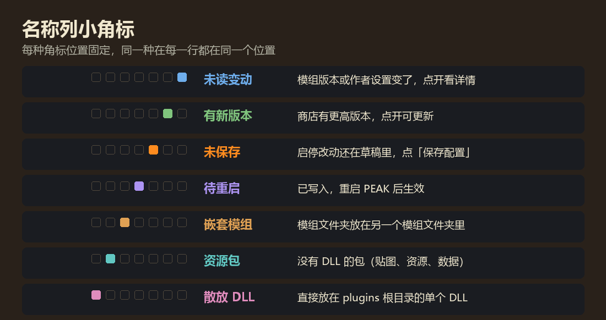

模组管理
一页看全所有模组
哪个有更新、哪个没生效、谁依赖谁，打开模组概览一眼就知道。启停、更新、卸载也在这一页做。

看懂一行
从左到右：启用方框、序号、名称（右上角是状态角标）、齿轮（打开设置）、主页（项目页和商店页）、文件夹（打开所在位置）、版本、作者、简介。鼠标停在名称上会显示依赖卡：它需要哪些模组、哪些模组需要它。

主要功能
- 分组分组可以嵌套三层，拖动标题就能挂到别的分组下。删除分组不删文件，组里的模组上移一层。
- 首次自动分组第一次打开时，按你 plugins 里现有的分类文件夹生成分组建议，确认才保存。
- 勾选启停勾选或取消就行，不用手动改文件名。改动先进草稿，保存后下次启动生效。
- 同一个模组装了两份每份单独一行，勾选其中一份会自动停用其他副本。
- 检查更新在主菜单和机场自动检查，只检查不下载。有新版时名称和版本号旁出现绿色角标。
- 更新、安装、卸载点了就进更新队列，不用保存配置。缺的依赖会一起装上。
- 等退出再替换只有要替换正在运行的文件时才等你退出游戏；新装的模组游戏运行时就能装好。
- 回退已完成的更新可以回退到更新前的文件，默认保留你现在的参数。
- 搜索与筛选按名称、作者、版本、简介搜索；按可更新、重复、异常、有变更等状态筛选。
- 基础组件BepInEx 的 core、patchers 里的共用运行库也列出来，可以改译名、启停、卸载。
- 资源包和特殊情况只有 manifest 没有 DLL 的资源包、嵌套在别的模组文件夹里的模组、散放的 DLL，都会单独标出。
- 目录整理按分组把 plugins 文件夹整理好。只移动不改名，先看预览树，空文件夹可以一起放进回收站。
来源：这个模组在商店里是哪个包
确认了来源，才能检查更新、在发布整合包时写对依赖。自动识别用模组的原名去商店找，名称唯一、作者一致就直接匹配；有疑问的交给你手动选。
通过管理器商店装的模组直接按安装记录确认，不用再识别。确实没有商店版本的，标成「本地」，以后不再查。
来源只影响更新检查。还没确认来源的模组照样能用、能启停，依赖检查也照常：装了、启用了、版本够就不会报错。